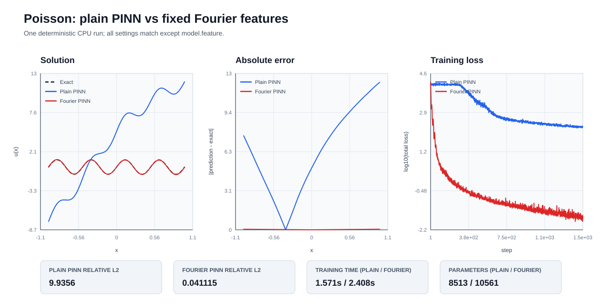

Fourier 特征：先把坐标展开再交给网络
方法速览
- 调用简称:
method="fourier"，variant="random_fourier"- 简单介绍:
在 MLP 前把坐标映射为多频率正弦和余弦特征，减轻网络只先学习低频成分的倾向。
- 适用方向:
高频解、多尺度解、波动和反应扩散等普通 MLP 容易出现谱偏差的问题。
- 论文原文:
- 代码与许可:
参考代码；未检测到明确 LICENSE；OpenPINN 未复制该仓库实现。
超参数怎么改
op.method(
"fourier",
"random_fourier",
num_frequencies=16,
scale=1.0,
seed=29,
include_input=True,
trainable=False,
)
参数 |
默认值 |
含义与修改影响 |
|---|---|---|
频率数量 |
|
每个输入维度使用的随机 Fourier 频率数。 调大会增加特征维度、参数量和高频表达能力，也会增加时间与过拟合风险；调小更省算力，但可能漏掉高频。 |
频率尺度 |
|
随机频率矩阵的尺度；越大越强调高频。 调大偏向更短波长，适合高频解但可能让优化变难；调小偏向平滑、低频结构。 |
特征随机种子 |
|
固定随机 Fourier 特征的随机种子。 改变它会换一组随机频率，不代表数值越大越好；正式比较应固定种子或报告多种子结果。 |
保留原始坐标 |
|
是否把原始坐标与 Fourier 特征拼接。 设为 True 可保留低频和坐标直连信息但增加输入维度；False 更精简，但完全依赖 Fourier 特征。 |
训练频率矩阵 |
|
是否把随机频率矩阵也作为可训练参数。 True 增加可训练自由度，可能适应问题频谱但更慢、更易不稳；False 固定特征，复现更简单。 |
建议先保留默认值完成短跑，再一次只改一个参数并记录误差与时间。也可以在 配置生成器 中选择方法后直接编辑这些参数；调大或调小都不保证精度一定提高。
一句话说明
普通 PINN 直接把 x 交给 MLP。Fourier 版本先计算一组正弦和余弦，再把展开后的坐标交给同一种 MLP。这样做的目的是让网络更容易表示高频和多尺度变化，但不保证每个问题都会更准。
放在哪里
方法本身位于 src/openpinn/features.py 的 FourierFeatures。它只负责把坐标变成特征；网络、PDE、采样、训练和评价仍使用 OpenPINN 的公共流程。
统一调用方式
配置文件 configs/reference_runs/poisson_fourier.yaml 中只需选择特征：
model:
feature:
name: fourier
num_frequencies: 16
scale: 1.0
seed: 29
include_input: true
trainable: false
比较脚本会复制这份配置，普通版只把 model.feature 换成 identity，Fourier 版保留上述设置。方程、采样点、隐藏层宽度、优化器、步数和实验随机种子保持不变。
最短调用
import openpinn as op
result = op.solve(
"poisson", method="fourier", variant="random_fourier", steps=5000
)
怎样运行对比
在项目根目录执行：
$run = Get-Date -Format "yyyyMMdd_HHmmss"
.\.venv\Scripts\python -m examples.poisson_fourier `
--output-dir "runs/poisson_fourier_$run"
macOS 或 Linux 可以使用：
run=$(date +%Y%m%d_%H%M%S)
python -m examples.poisson_fourier \
--output-dir "runs/poisson_fourier_${run}"
会保存什么
输出根目录中包含：
plain_pinn/：普通 PINN 的配置、指标、历史、预测、时间和 checkpoint；fourier_pinn/：Fourier PINN 的同类输出；comparison.json和comparison.csv：两种方法的误差、残差、时间和参数量；comparison.svg：预测曲线、绝对误差和训练曲线；failure_notes.md：失败原因和结果解读边界。
怎样读结果
relative_l2_error 越小表示预测曲线整体越接近解析解；pde_residual_rmse 越小表示方程残差越小。还要同时查看运行时间和参数量。Fourier 展开会增加 MLP 第一层的输入宽度，因此参数量不会与普通版完全相同，比较表会明确记录这一点。
参考实验结果
2026-08-25 在 CPU 上使用一个固定随机种子完成了一次 1500 步对比。两个运行都完成，没有 NaN/Inf 或安装失败。
方法 |
相对 L2 误差 |
PDE 残差 RMSE |
训练时间 |
参数量 |
|---|---|---|---|---|
普通 PINN |
9.9356 |
9.4935 |
1.571 s |
8513 |
Fourier PINN |
0.041115 |
0.17815 |
2.408 s |
10561 |
完整记录位于 results/methods/poisson_fourier_20260825_014553/。这个结果说明在该高频 Poisson 设置中 Fourier 版更接近解析解，但不能从一次运行推导出对其他问题或其他随机种子也一定更好。


已知限制
当前配置只跑一个固定随机种子，不能当作统计优越性结论；
Fourier 频率和
scale会影响结果，本页不进行大范围调参；如果误差没有下降，依然应保留运行目录和
failure_notes.md，不删除“不好看”的结果。
论文和代码来源说明
Fourier 特征用于多尺度 PDE 的理论背景可参考 Wang 等人的论文 On the eigenvector bias of Fourier feature networks: From regression to solving multi-scale PDEs with physics-informed neural networks。
OpenPINN 的 Fourier 实现没有复制、改写或翻译任何外部仓库代码，也没有引入许可不清楚或限制商业使用的实现。比较脚本仅调用 OpenPINN 的 FourierFeatures 和公共实验入口。